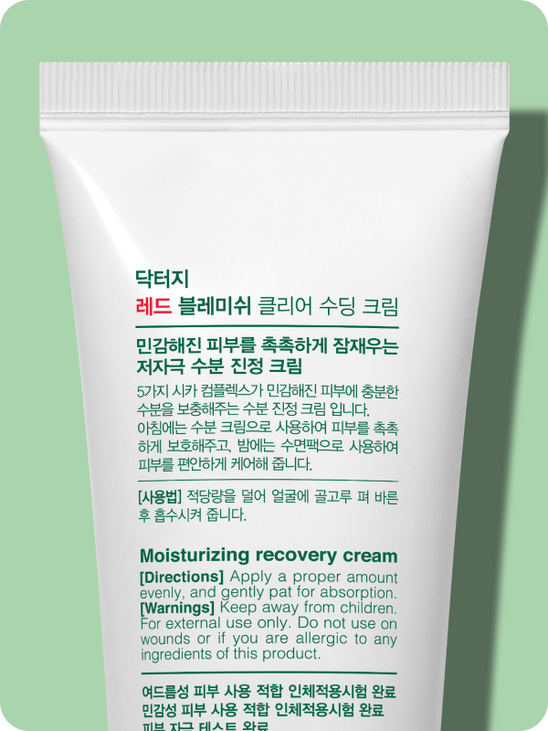

@@include('../../html/include/common/head.html')
@@include('../../html/include/common/header.html')
1:1 성분분석
Dr.G Cosmetic Analysis
제품 업로드/검색
제품명 확인
성분 분석
제품명을 확인합니다.
인식된 텍스트 영역 중에서
브랜드명, 제품명
에 해당하는 영역을 모두 선택해주세요.

제품명이 인식되지 않는다면? 촬영 가이드를 확인하세요.
촬영 가이드 확인
그린 마일드 업
인바디
선 에센스
스킨케어
아이
닥터지
그린 마일드 업
선택 완료
다시 업로드하기
@@include('../../html/include/common/footer.html')
@@include('./_analysisScript.html')